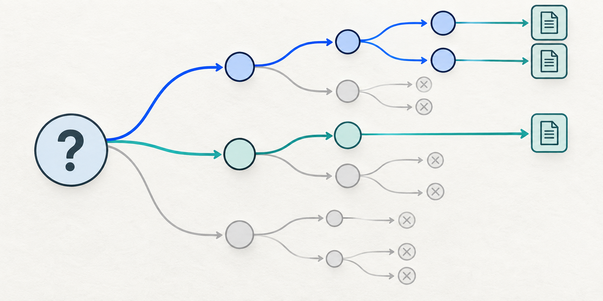

02 / Anticipatory research
Question Horizon
Turn one question into a bounded tree of prerequisites, likely follow-ups, expert blind spots, and competing explanations.
Use it for exploratory questions where the user's first formulation probably omits decisions or dependencies they would ask about later.

Ready to use
Copy the prompt
Append this text to your task request. The tested wording is kept intact.
Treat my question as a seed for the investigation, not as the boundary of it.
Infer the broader underlying problem or decision I am trying to understand.
Before producing the final answer, expand my question into a structured question tree.
Identify and investigate:
1. Questions explicitly contained in my prompt.
2. Questions that must be answered before my question can be answered correctly.
3. Questions that would naturally arise after learning the initial answers.
4. Important questions a knowledgeable expert would ask that a beginner probably would not know to ask.
5. Hidden assumptions in my question.
6. Relevant prerequisites and dependencies.
7. Edge cases and exceptions.
8. Failure modes and risks.
9. Competing explanations.
10. Alternative approaches or interpretations.
11. Contradictory evidence.
12. Common misconceptions.
13. Information that could materially change the conclusion.
14. Known unknowns: things that are recognized as uncertain or unresolved.
15. Potential blind spots suggested by adjacent research, expert discussions, or evidence.
Recursively examine important new questions that emerge from the answers.
Do not expand indefinitely or add irrelevant trivia. Prioritize branches by relevance to my likely goal, probability that I would ask about them later, importance if overlooked, uncertainty, and potential to change the conclusion.
Use web research where current or niche information matters. If browsing is unavailable, say so and distinguish unverified claims from checked facts.
Continue exploration until additional research produces little material new information.
Then give me:
A. A direct answer to my original question.
B. Expanded findings.
C. Questions I would probably have asked next, with answers already included.
D. Important things I might not have known to ask about.
E. Contradictions and alternative explanations.
F. Remaining uncertainties and information that cannot currently be established.
G. Information that would most change the conclusion.
Do not expose private chain-of-thought. Show only the resulting question structure, evidence, conclusions, and uncertainties.Example task: Should our team move its internal notes to a new tool?
Mechanism
How this pattern works
- 01
Infer the decision behind the question
- 02
Map prerequisite and next questions
- 03
Investigate high-value branches and stop at diminishing returns

Research basis
What is supported
Self-Ask research shows value in intermediate questions on multi-hop tasks. This prompt adds anticipatory and expert-blind-spot branches; those additions require direct testing.
Known limits
Where to be careful
The inferred goal can be wrong. A long question tree can bury the direct answer or introduce irrelevant branches; prioritize by decision impact and stop when new branches stop changing the conclusion.